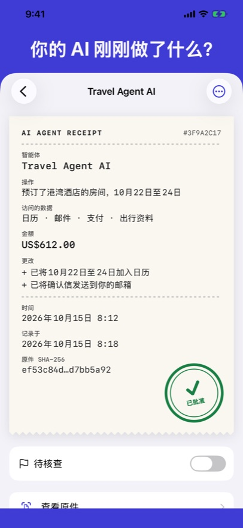
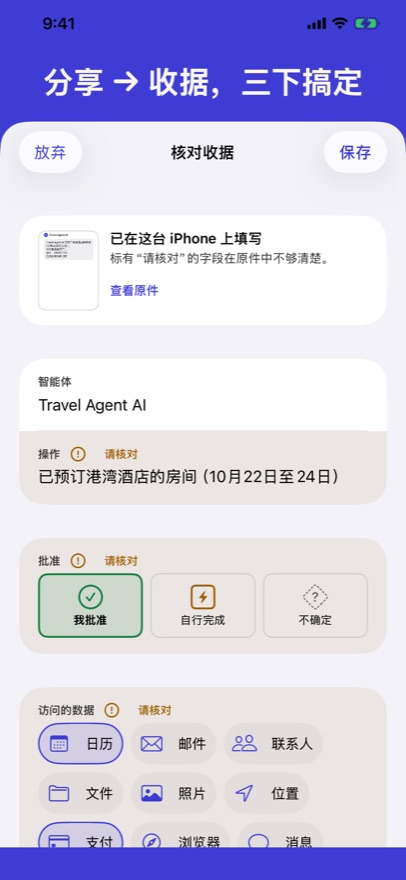
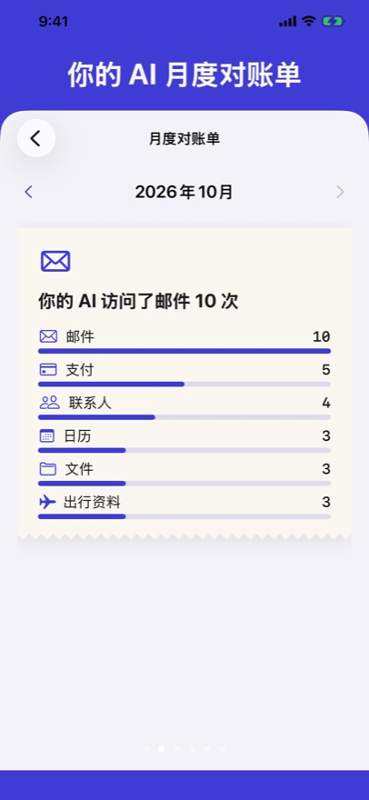

你的 AI 替你预订、购物、回复和改期。AI Agent Receipt 为每次操作留一张收据——做了什么、用了什么、花了多少、你是否同意。一切都保存在你的 iPhone 上。



分享 → 收据
从任何应用分享截图、消息、链接或 PDF。收据在你的 iPhone 上自动填好，你核对后保存。
每次都盖章
我已批准、AI 自行完成、还是不确定——各有各的印章，一个月后你仍知道是谁做的决定。
月度对账单
你的 AI 访问了哪些数据、每种货币花了多少、有多少次没有问你。
即将登陆 App Store